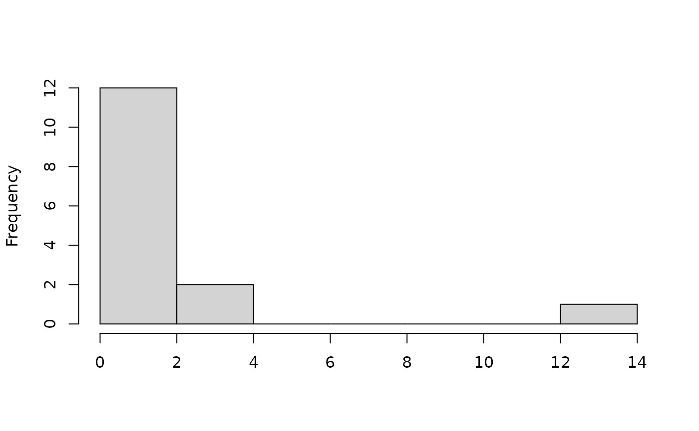
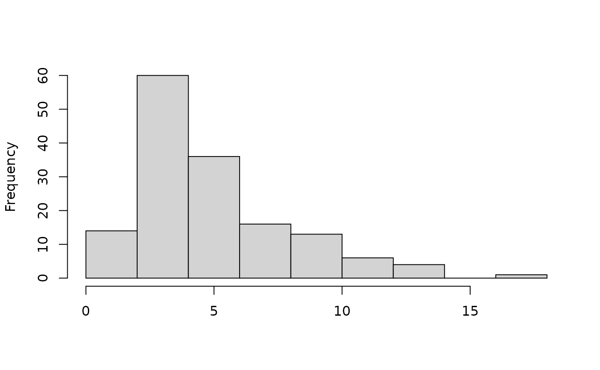
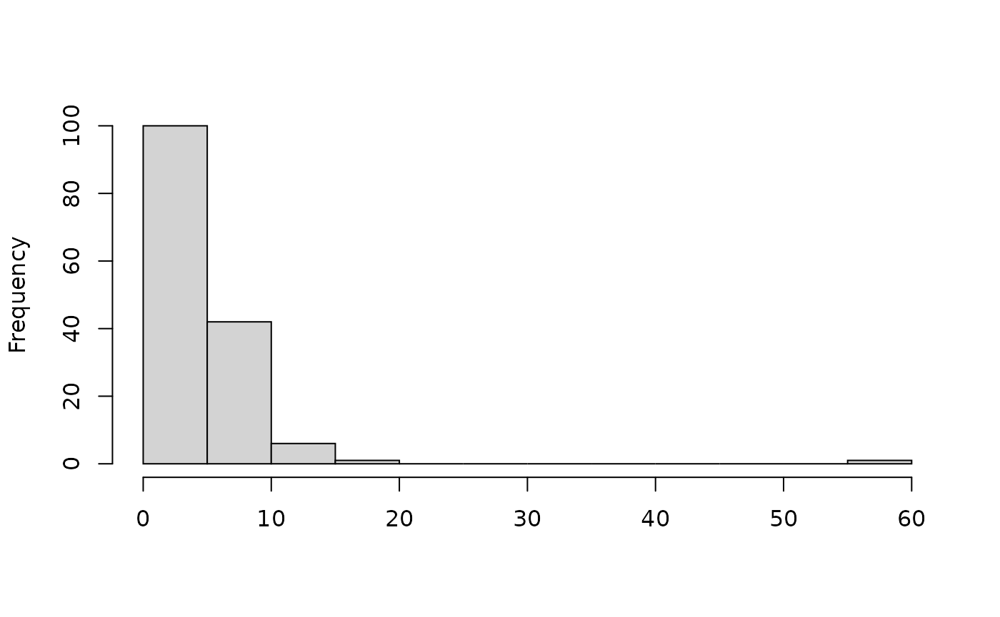

Assertive R Programming with assertr
Tony Fischetti
2024-03-21
Source:vignettes/assertr.Rmd
assertr.RmdIn data analysis workflows that depend on un-sanitized data sets from external sources, it’s very common that errors in data bring an analysis to a screeching halt. Oftentimes, these errors occur late in the analysis and provide no clear indication of which datum caused the error.
On occasion, the error resulting from bad data won’t even appear to be a data error at all. Still worse, errors in data will pass through analysis without error, remain undetected, and produce inaccurate results.
The solution to the problem is to provide as much information as you can about how you expect the data to look up front so that any deviation from this expectation can be dealt with immediately. This is what the assertr package tries to make dead simple.
Essentially, assertr provides a suite of functions designed to verify assumptions about data early in an analysis pipeline. This package needn’t be used with the magrittr/dplyr piping mechanism but the examples in this vignette will use them to enhance clarity.
concrete data errors
Let’s say, for example, that the R’s built-in car dataset, mtcars, was not built-in but rather procured from an external source that was known for making errors in data entry or coding.
In particular, the mtcars dataset looks like this:
head(mtcars)## mpg cyl disp hp drat wt qsec vs am gear carb
## Mazda RX4 21.0 6 160 110 3.90 2.620 16.46 0 1 4 4
## Mazda RX4 Wag 21.0 6 160 110 3.90 2.875 17.02 0 1 4 4
## Datsun 710 22.8 4 108 93 3.85 2.320 18.61 1 1 4 1
## Hornet 4 Drive 21.4 6 258 110 3.08 3.215 19.44 1 0 3 1
## Hornet Sportabout 18.7 8 360 175 3.15 3.440 17.02 0 0 3 2
## Valiant 18.1 6 225 105 2.76 3.460 20.22 1 0 3 1But let’s pretend that the data we got accidentally negated the 5th mpg value:
our.data <- mtcars
our.data$mpg[5] <- our.data$mpg[5] * -1
our.data[4:6,]## mpg cyl disp hp drat wt qsec vs am gear carb
## Hornet 4 Drive 21.4 6 258 110 3.08 3.215 19.44 1 0 3 1
## Hornet Sportabout -18.7 8 360 175 3.15 3.440 17.02 0 0 3 2
## Valiant 18.1 6 225 105 2.76 3.460 20.22 1 0 3 1Whoops!
If we wanted to find the average miles per gallon for each number of engine cylinders, we might do so like this:
## # A tibble: 3 × 2
## cyl avg.mpg
## <dbl> <dbl>
## 1 4 26.7
## 2 6 19.7
## 3 8 12.4This indicates that the average miles per gallon for a 8 cylinder car is a lowly 12.43. However, in the correct dataset it’s really just over 15. Data errors like that are extremely easy to miss because it doesn’t cause an error, and the results look reasonable.
enter assertr
To combat this, we might want to use assertr’s verify function to make sure that mpg is a positive number:
## verification [mpg >= 0] failed! (1 failure)
##
## verb redux_fn predicate column index value
## 1 verify NA mpg >= 0 NA 5 NA## Error: assertr stopped executionIf we had done this, we would have caught this data error.
The verify function takes a data frame (its first argument is provided by the %>% operator), and a logical (boolean) expression. Then, verify evaluates that expression using the scope of the provided data frame. If any of the logical values of the expression’s result are FALSE, verify will raise an error that terminates any further processing of the pipeline.
We could have also written this assertion using assertr’s assert function…
## Column 'mpg' violates assertion 'within_bounds(0, Inf)' 1 time
## verb redux_fn predicate column index value
## 1 assert NA within_bounds(0, Inf) mpg 5 -18.7## Error: assertr stopped executionThe assert function takes a data frame, a predicate function, and an arbitrary number of columns to apply the predicate function to. The predicate function (a function that returns a logical/boolean value) is then applied to every element of the columns selected, and will raise an error when if it finds violations.
Internally, the assert function uses dplyr’s select function to extract the columns to test the predicate function on. This allows for complex assertions. Let’s say we wanted to make sure that all values in the dataset are greater than zero (except mpg):
library(assertr)
our.data %>%
assert(within_bounds(0,Inf, include.lower=FALSE), -mpg) %>%
group_by(cyl) %>%
summarise(avg.mpg=mean(mpg))## Column 'vs' violates assertion 'within_bounds(0, Inf, include.lower = FALSE)' 18 times
## verb redux_fn predicate column index
## 1 assert NA within_bounds(0, Inf, include.lower = FALSE) vs 1
## 2 assert NA within_bounds(0, Inf, include.lower = FALSE) vs 2
## 3 assert NA within_bounds(0, Inf, include.lower = FALSE) vs 5
## 4 assert NA within_bounds(0, Inf, include.lower = FALSE) vs 7
## 5 assert NA within_bounds(0, Inf, include.lower = FALSE) vs 12
## value
## 1 0
## 2 0
## 3 0
## 4 0
## 5 0
## [omitted 13 rows]
##
##
## Column 'am' violates assertion 'within_bounds(0, Inf, include.lower = FALSE)' 19 times
## verb redux_fn predicate column index
## 1 assert NA within_bounds(0, Inf, include.lower = FALSE) am 4
## 2 assert NA within_bounds(0, Inf, include.lower = FALSE) am 5
## 3 assert NA within_bounds(0, Inf, include.lower = FALSE) am 6
## 4 assert NA within_bounds(0, Inf, include.lower = FALSE) am 7
## 5 assert NA within_bounds(0, Inf, include.lower = FALSE) am 8
## value
## 1 0
## 2 0
## 3 0
## 4 0
## 5 0
## [omitted 14 rows]## Error: assertr stopped executionverify vs. assert
The first noticable difference between verify and assert is that verify takes an expression, and assert takes a predicate and columns to apply it to. This might make the verify function look more elegant–but there’s an important drawback. verify has to evaluate the entire expression first, and then check if there were any violations. Because of this, verify can’t tell you the offending datum.
One important drawback to assert, and a consequence of its application of the predicate to columns, is that assert can’t confirm assertions about the data structure itself. For example, let’s say we were reading a dataset from disk that we know has more than 100 observations; we could write a check of that assumption like this:
Other checking functions that are only available to verify are has_all_names, has_only_names, and has_class.
This is a powerful advantage over assert… but assert has one more advantage of its own that we’ve heretofore ignored.
assertr’s predicates
assertr’s predicates, both built-in and custom, make assert very powerful. The predicates that are built in to assertr are
-
not_na- that checks if an element is not NA -
within_bounds- that returns a predicate function that checks if a numeric value falls within the bounds supplied, and -
in_set- that returns a predicate function that checks if an element is a member of the set supplied. -
is_uniq- that checks to see if each element appears only once
We’ve already seen within_bounds in action… let’s use the in_set function to make sure that there are only 0s and 1s (automatic and manual, respectively) values in the am column…
If we were reading a dataset that contained a column representing boroughs of New York City (named BORO), we can verify that there are no mis-spelled or otherwise unexpected boroughs like so…
boroughs <- c("Bronx", "Manhattan", "Queens", "Brooklyn", "Staten Island")
read.csv("a-dataset.csv") %>%
assert(in_set(boroughs), BORO) %>%
...Rad!
custom predicates
A convenient feature of assertr is that it makes the construction of custom predicate functions easy.
In order to make a custom predicate, you only have to specify cases where the predicate should return FALSE. Let’s say that a dataset has an ID column (named ID) that we want to check is not an empty string. We can create a predicate like this:
not.empty.p <- function(x) if(x=="") return(FALSE)and apply it like this:
Let’s say that the ID column is always a 7-digit number. We can confirm that all the IDs are 7-digits by defining the following predicate:
seven.digit.p <- function(x) nchar(x)==7A powerful consequence of this easy creation of predicates is that the assert function lends itself to use with lambda predicates (unnamed predicates that are only used once). The check above might be better written as
Neat-o!
enter insist and predicate ‘generators’
Very often, there is a need to dynamically determine the predicate function to be used based on the vector being checked.
For example, to check to see if every element of a vector is within n standard deviations of the mean, you need to create a within_bounds predicate after dynamically determining the bounds by reading and computing on the vector itself.
To this end, the assert function is no good; it just applies a raw predicate to a vector. We need a function like assert that will apply predicate generators to vectors, return predicates, and then perform assert-like functionality by checking each element of the vectors with its respective custom predicate. This is precisely what insist does.
This is all much simpler than it may sound. Hopefully, the examples will clear up any confusion.
The primary use case for insist is in conjunction with the within_n_sds or within_n_mads predicate generator.
Suppose we wanted to check that every mpg value in the mtcars data set was within 3 standard deviations of the mean before finding the average miles per gallon for each number of engine cylinders. We could write something like this:
## # A tibble: 3 × 2
## cyl avg.mpg
## <dbl> <dbl>
## 1 4 26.7
## 2 6 19.7
## 3 8 15.1Notice what happens when we drop that z-score to 2 standard deviations from the mean
## Column 'mpg' violates assertion 'within_n_sds(2)' 2 times
## verb redux_fn predicate column index value
## 1 insist NA within_n_sds(2) mpg 18 32.4
## 2 insist NA within_n_sds(2) mpg 20 33.9## Error: assertr stopped executionExecution of the pipeline was halted. But now we know exactly which data point violated the predicate that within_n_sds(2)(mtcars$mpg) returned.
Now that’s an efficient car!
After the predicate generator, insist takes an arbitrary number of columns just like assert using the syntax of dplyr’s select function. If you wanted to check that everything in mtcars is within 10 standard deviations of the mean (of each column vector), you can do so like this:
## # A tibble: 3 × 2
## cyl avg.mpg
## <dbl> <dbl>
## 1 4 26.7
## 2 6 19.7
## 3 8 15.1Aces!
I chose to use within_n_sds in this example because people are familiar z-scores. However, for most practical purposes, the related predicate generator within_n_mads is more useful.
The problem with within_n_sds is the mean and standard deviation are so heavily influenced by outliers, their very presence will compromise attempts to identify them using these statistics. In contrast with within_n_sds, within_n_mads uses the robust statistics, median and median absolute deviation, to identify potentially erroneous data points.
For example, the vector <7.4, 7.1, 7.2, 72.1> almost certainly has an erroneous data point, but within_n_sds(2) will fail to detect it.
example.vector <- c(7.4, 7.1, 7.2, 72.1)
within_n_sds(2)(example.vector)(example.vector)## [1] TRUE TRUE TRUE TRUEwhereas within_n_mads will detect it at even lower levels of power….
example.vector <- c(7.4, 7.1, 7.2, 72.1)
within_n_mads(2)(example.vector)(example.vector)## [1] TRUE TRUE TRUE FALSE
within_n_mads(1)(example.vector)(example.vector)## [1] TRUE TRUE TRUE FALSETubular!
row-wise assertions and row reduction functions
As cool as it’s been so far, this still isn’t enough to constitute a complete grammar of data integrity checking. To see why, check out the following small example data set:
example.data <- data.frame(x=c(8, 9, 6, 5, 9, 5, 6, 7,
8, 9, 6, 5, 5, 6, 7),
y=c(82, 91, 61, 49, 40, 49, 57,
74, 78, 90, 61, 49, 51, 62, 68))
(example.data)## x y
## 1 8 82
## 2 9 91
## 3 6 61
## 4 5 49
## 5 9 40
## 6 5 49
## 7 6 57
## 8 7 74
## 9 8 78
## 10 9 90
## 11 6 61
## 12 5 49
## 13 5 51
## 14 6 62
## 15 7 68Can you spot the brazen outlier? You’re certainly not going to find it by checking the distribution of each column! All elements from both columns are within 2 standard deviations of their respective means.
Unless you have a really good eye, the only way you’re going to catch this mistake is by plotting the data set.
plot(example.data$x, example.data$y, xlab="", ylab="")Ok, so all the ys are roughly 10 times the xs except the outlying data point.
The problem having to plot data sets to catch anomalies is that it is really hard to visualize 4-dimensions at once, and it is near impossible with high-dimensional data.
There’s no way of catching this anomaly by looking at each individual column separately; the only way to catch it is to view each row as a complete observation and compare it to the rest.
To this end, assertr provides three functions that take a data frame, and reduce each row into a single value. We’ll call them row reduction functions.
The first one we’ll look at is called maha_dist. It computes the average mahalanobis distance (kind of like multivariate z-scoring for outlier detection) of each row from the whole data set. The big idea is that in the resultant vector, big/distant values are potential anomalous entries. Let’s look at the distribution of mahalanobis distances for this data set…
maha_dist(example.data)## [1] 1.28106379 3.10992407 0.25081851 1.35993969 12.81898913 1.35993969
## [7] 0.26181283 0.47714597 0.87804987 2.95741956 0.25081851 1.35993969
## [13] 1.29208587 0.28235776 0.05969507
There’s no question here as to whether there’s an anomalous entry! But how do you check for this sort of thing using assertr constructs?
Well, maha_dist will typically be used with the insist_rows function. insist_rows takes a data frame, a row reduction function, a predicate-generating function, and an arbitrary number of columns to apply the predicate function to. The row reduction function (maha_dist in this case) is applied to the data frame, and returns a value for each row. The predicate-generating function is then applied to the vector returned from the row reduction function and the resultant predicate is applied to each element of that vector. It will raise an error if it finds any violations.
As always, this undoubtedly sounds far more confusing than it really is. Here’s an example of it in use
example.data %>%
insist_rows(maha_dist, within_n_mads(3), dplyr::everything())## Data frame row reduction 'maha_dist' violates predicate 'within_n_mads(3)' 1 time
## verb redux_fn predicate column index value
## 1 insist_rows maha_dist within_n_mads(3) ~dplyr::everything() 5 12.81899## Error: assertr stopped executionCheck that out! To be clear, this function is running the supplied data frame through the maha_dist function which returns a value for each row corresponding to its mahalanobis distance. (The whole data frame is used because we used the everything() selection function from the dplyr package.) Then, within_n_mads(3) computes on that vector and returns a bounds checking predicate. The bounds checking predicate checks to see that all mahalanobis distances are within 3 median absolute deviations of each other. They are not, and the pipeline errors out. Note that the data.frame of errors that is returned by error report contains the verb used (insist_rows), the row reduction function, the predicate, the column (or columns), the index of the failure and the offendind datum.
This is probably the most powerful construct in assertr–it can find a whole lot of nasty errors that would be very difficult to check for by hand.
Part of what makes it so powerful is how flexible maha_dist is. We only used it, so far, on a data frame of numerics, but it can handle all sorts of data frames. To really see it shine, let’s use it on the iris data set, that contains a categorical variable in its right-most column…
head(iris)## Sepal.Length Sepal.Width Petal.Length Petal.Width Species
## 1 5.1 3.5 1.4 0.2 setosa
## 2 4.9 3.0 1.4 0.2 setosa
## 3 4.7 3.2 1.3 0.2 setosa
## 4 4.6 3.1 1.5 0.2 setosa
## 5 5.0 3.6 1.4 0.2 setosa
## 6 5.4 3.9 1.7 0.4 setosa
Looks ok, but what happens when we accidentally enter a row as a different species…
mistake <- iris
(mistake[149,5])## [1] virginica
## Levels: setosa versicolor virginica
## [1] 149Look at that! This mistake can easily be picked up by any reasonable bounds checker…
mistake %>% insist_rows(maha_dist, within_n_mads(7), dplyr::everything())## Data frame row reduction 'maha_dist' violates predicate 'within_n_mads(7)' 1 time
## verb redux_fn predicate column index value
## 1 insist_rows maha_dist within_n_mads(7) ~dplyr::everything() 149 56.6992## Error: assertr stopped executioninsist and insist_rows are both similar in that they both take predicate generators and not actual predicates. What makes insist_rows different is its usage of a row-reduce data frame.
assert has a row-oriented counterpart, too; it’s called assert_rows. insist is to assert as insist_rows is to assert_rows.
assert_rows works the same as insist_rows, except that instead of using a predicate generator on the row-reduced data frame, it uses a regular-old predicate.
For an example of a assert_rows use case, let’s say that we got a data set (another-dataset.csv) from the web and we don’t want to continue processing the data set if any row contains more than two missing values (NAs). You can use the row reduction function num_row_NAs to reduce all the rows into the number of NAs they contain. Then, a simple bounds checker will suffice for ensuring that no element is higher than 2…
read.csv("another-dataset.csv") %>%
assert_rows(num_row_NAs, within_bounds(0,2), dplyr::everything()) %>%
...assert_rows can be used for anomaly detection as well. A future version of assertr may contain a cosine distance row reduction function. Since all cosine distances are constained from -1 to 1, it is easy to use a non-dynamic predicate to disallow certain values.
success, error and defect functions
The behavior of functions like assert, assert_rows, insist, insist_rows, verify when the assertion passes, fails or is skipped due to data defect is configurable via the success_fun, error_fun and defect_fun parameters, respectively.
The success_fun parameter takes a function that takes the data passed to the assertion function as a parameter. You can write your own success handler function, but there are a few provided by this package:
success_continue- just returns the data that was passed into the assertion function (this is default).success_logical- returns TRUEsuccess_append- returns the data that was passed into the assertion function but also attaches basic information about verification result to a special attribute ofdata.success_report- when success results are stored (chain_start(store_results=TRUE)), and each verification ended up with success, it prints a summary of all successful validations (when being in chan) or simple verification result for single check and returns data.success_df_return- when success results are stored (chain_start(store_results=TRUE)), and each verification ended up with success, it prints data.frame with verification results (can be used forchain_endor single verification).
The error_fun parameter takes a function that takes the data passed to the assertion function as a parameter. You can write your own error handler function, but there are a few provided by this package:
error_stop- Prints a summary of the errors and halts execution (default)error_report- Prints all the information available about the errors and halts execution.error_append- Attaches the errors to a special attribute ofdataand returns the data. This is chiefly to allow assertr errors to be accumulated in a pipeline so that all assertions can have a chance to be checked and so that all the errors can be displayed at the end of the chain.error_logical- returns FALSEjust_warn- Prints a summary of the errors but does not halt execution, it just issues a warning.warn_report- Prints all the information available about the errors but does not halt execution, it just issues a warning.defect_report- For single rule and defective data it displays short info about skipping the current assertion. Forchain_endsums up all skipped rules for defective data.defect_df_return- For single rule and defective data it returns info data.frame about skipping current assertion. Forchain_endreturns all skipped rules info data.frame for defective data.
The defect_fun parameter takes a function that takes the data passed to the assertion function as a parameter. Defect handler is called when any of previous assertions that was marked as obligatory failed (see below section). You can write your own defect handler function, but there are a few provided by this package:
defect_append- Attaches the assertion call info on defective data to a special attribute ofdataand returns the data.defect_report- For single rule and defective data it displays short info about skipping current assertion. Forchain_endsums up all skipped rules for defective data.defect_df_return- For single rule and defective data it returns info data.frame about skipping current assertion. Forchain_endreturns all skipped rules info data.frame for defective data.
Obligatory assertions
You may find a situation in which some rules are not independent.
For example:
mtcars_without_am <- mtcars %>%
dplyr::select(-am)
mtcars_without_am %>%
verify(has_all_names("am", "vs"), error_fun = error_append) %>%
assert(in_set(0, 1), am, vs, error_fun = error_report)assert requires existence of am and vs columns, which are checked previously by verify assertion. In the above example, we want to store info about all errors after assertions are finished but it won’t happen. A missing am column in the data returns error not related to assertion check. As a result code execution ends up with not handled error.
To allow such situations obligatory rules were introduced. You can create an obligatory rule by adding obligatory = TRUE inside assertion function. When a rule was obligatory and failed, the data is marked as defective and each following rule will be handled by defect_fun function. By default defect_fun=defect_append which registers information about running assertion on defective data and skips the rule execution.
Below we display information about a skipped rule by using defect_report:
mtcars_without_am <- mtcars %>%
dplyr::select(-am)
mtcars_without_am %>%
verify(has_all_names("am", "vs"), obligatory=TRUE, error_fun=error_append) %>%
assert(in_set(0, 1), am, vs, defect_fun=defect_report)## assert: verification [in_set(0, 1)] omitted due to data defect! Columns passed to assertion: am vscombining chains of assertions
Let’s say that as part of an automated pipeline that grabs mtcars from an untrusted source and finds the average miles per gallon for each number of engine cylinders, we want to perform the following checks…
- that it has the columns “mpg”, “vs”, and “am”
- that the dataset contains more than 10 observations
- that the column for ‘miles per gallon’ (mpg) is a positive number
- that the column for ‘miles per gallon’ (mpg) does not contain a datum that is outside 4 standard deviations from its mean, and
- that the am and vs columns (automatic/manual and v/straight engine, respectively) contain 0s and 1s only
This could be written thusly:
mtcars %>%
verify(has_all_names("mpg", "vs", "am")) %>%
verify(nrow(mtcars) > 10) %>%
verify(mpg > 0) %>%
insist(within_n_sds(4), mpg) %>%
assert(in_set(0,1), am, vs) %>%
group_by(cyl) %>%
summarise(avg.mpg=mean(mpg))## # A tibble: 3 × 2
## cyl avg.mpg
## <dbl> <dbl>
## 1 4 26.7
## 2 6 19.7
## 3 8 15.1In an assertr chain with default options, assert, assert_rows, insist, insist_rows, and verify will stop at the first assertion that yields an error and not go on to process the assertions further down in the chain. For some needs, this is sensible behavior. There are times, however, when we might like to get a report of all assertion violations. For example, one might want to write an R program to download some dataset from the internet and get a detailed report of all deviations from expectation.
The best thing to do for this use case, is to use the chain_start, and chain_end functions at the beginning and end of a chain of assertr assertions. When chain_start gets called with data, the data gets a special tag that tells the assertr assertions that follow to override their success_fun and error_fun values and replace them with success_continue (which passes the data along if the test passes) and error_append (which we’ve just discussed). After all relevant verifications, chain_end will receive the data (possibly with accumulated error messages attached) and, by default, print a report of all the errors that have been found since the start of the chain.
Let’s see it in action!
mtcars %>%
chain_start %>%
verify(nrow(mtcars) > 10) %>%
verify(mpg > 0) %>%
insist(within_n_sds(4), mpg) %>%
assert(in_set(0,1), am, vs) %>%
chain_end %>%
group_by(cyl) %>%
summarise(avg.mpg=mean(mpg))## # A tibble: 3 × 2
## cyl avg.mpg
## <dbl> <dbl>
## 1 4 26.7
## 2 6 19.7
## 3 8 15.1Now all assertions will be checked and reported.
Tip: we can make this whole thing look a lot better by abstracting out all the assertions:
check_me <- . %>%
chain_start %>%
verify(nrow(mtcars) > 10) %>%
verify(mpg > 0) %>%
insist(within_n_sds(4), mpg) %>%
assert(in_set(0,1), am, vs) %>%
chain_end
mtcars %>%
check_me %>%
group_by(cyl) %>%
summarise(avg.mpg=mean(mpg))Awesome! Now we can add an arbitrary number of assertions, as the need arises, without touching the real logic.
Note: By default, all assertions in the chain use success_continue and error_append functions. It allows you to continue workflow in both cases and aggregate error logs. In some cases (i.e. when you don’t want to include the error log and just have some error printed), you can require using assertion specific success/error callback in chain.
Just use skip_chain_opts = TRUE and specify callback inside assertion:
print_error <- function(errors, data=NULL) {
print(errors)
return(data)
}
mtcars %>%
chain_start %>%
verify(nrow(mtcars) > 32, error_fun=print_error, skip_chain_opts=TRUE) %>%
verify(mpg > 0) %>%
insist(within_n_sds(4), mpg) %>%
assert(in_set(0,1), am, vs) %>%
chain_end You may also store validation successful results by using store_success=TRUE:
mtcars %>%
chain_start(store_success=TRUE) %>%
verify(nrow(mtcars) == 32) %>%
verify(mpg > 0) %>%
insist(within_n_sds(4), mpg) %>%
assert(in_set(0,1), am, vs) %>%
chain_end(success_fun=success_df_return)advanced: send email reports using custom error functions
One particularly cool application of assertr is to use it as a data integrity checker for frequently updated data sources. A script can download new data as it becomes available, and then run assertr checks on it. This makes assertr into a sort of “continuous integration” tool (but for data, not code.)
In an unsupervised “continuous integration” environment, you need a way to discover that the assertions failed. In CI-as-a-service in the software world, failed automated checks often send an email of reporting the maintainer of a botched build; why not bring that functionality to assertr?!
As we learned in the last sections, all assertion verbs in assertr support a custom error function. chain_end similarly supports custom error functions. By default, this is error_stop (or error_report in the case of chain_end) which prints a summary of the errors and halts execution.
You can specify your own, though, to hijack this behavior and redirect flow-of-control wherever you want.
Your custom error function must take, as its first argument, a list of assertr_error S3 objects. The second argument must be the data.frame that the verb is computing on. Every error function must take this because there may be some other errors that are attached to the data.frame’s assertr_errors attribute leftover from other previous assertions.
Below we are going to build a function that takes a list of assertr_errors, gets a string representation of the errors and emails it to someone before halting execution. We will use the mailR package to send the mail.
library(mailR)
email_me <- function(list_of_errors, data=NULL, ...){
# we are checking to see if there are any errors that
# are still attached to the data.frame
if(!is.null(data) && !is.null(attr(data, "assertr_errors")))
errors <- append(attr(data, "assertr_errors"), errors)
num.of.errors <- length(list_of_errors)
preface <- sprintf("There %s %d error%s:\n",
ifelse(num.of.errors==1,"is", "are"),
num.of.errors,
ifelse(num.of.errors==1,"", "s"))
# all `assertr_error` S3 objects have `print` and `summary` methods
# here, we will call `print` on all of the errors since `print`
# will give us the complete/unabridged error report
error_string <- capture.output(tmp <- lapply(list_of_errors,
function(x){
cat("\n- ");
print(x);
return();}))
error_string <- c(preface, error_string)
error_string <- error_string %>% paste0(collapse="\n")
send.mail(from="assertr@gmail.com", to="YOU@gmail.com",
subject="error from assertr", body=error_string,
smtp = list(host.name="aspmx.l.google.com", port=25),
authenticate = FALSE, send=TRUE)
stop("assertr stopped execution", call.=FALSE)
}
questionable_mtcars %>%
chain_start %>%
verify(nrow(.) > 10) %>%
insist(within_n_sds(4), mpg) %>%
# ...
chain_end(error_fun=email.me)(this particular send.mail formulation will only work for gmail recipients; see the mailR documentation for more information)
Now you’ll get notified of any all failed assertions via email. Groovy!
advanced: creating your own predicate generators for insist
assertr is build with robustness, correctness, and extensibility in mind. Just like assertr makes it easy to create your own custom predicates, so too does this package make it easy to create your own custom predicate generators.
Okay… so its, perhaps, not easy because predicate generators by nature are functions that return functions. But it’s possible!
Let’s say you wanted to create a predicate generator that checks if all elements of a vector are within 3 times the vector’s interquartile range from the median. We need to create a function that looks like this
within_3_iqrs <- function(a_vector){
the_median <- median(a_vector)
the_iqr <- IQR(a_vector)
within_bounds((the_median-the_iqr*3), (the_median+the_iqr*3))
}Now, we can use it on mpg from mtcars like so:
## # A tibble: 3 × 2
## cyl avg.mpg
## <dbl> <dbl>
## 1 4 26.7
## 2 6 19.7
## 3 8 15.1There are two problems with this, though…
- We may want to abstract this so that we can supply an arbitrary number of IQRs to create the bounds with
- We lose the ability to choose what optional arguments (if any) that we give to the returned
within_boundspredicate.
Now we have to write a function that returns a function that returns a function…
within_n_iqrs <- function(n, ...){
function(a_vector){
the_median <- median(a_vector)
the_iqr <- IQR(a_vector)
within_bounds((the_median-the_iqr*n), (the_median+the_iqr*n), ...)
}
}Much better! Now, if we want to check that every mpg from mtcars is within 5 IQRs of the median and not allow NA values we can do so like this:
## # A tibble: 3 × 2
## cyl avg.mpg
## <dbl> <dbl>
## 1 4 26.7
## 2 6 19.7
## 3 8 15.1Super!
advanced: programming with assertion functions
These assertion functions use the tidyeval framework. In the past, programming in a tidyverse-like setting was accomplished through standard evaluation versions of verbs, which used functions postfixed with an underscore: insist_ instead of insist, for example. However, when tidyeval was made popular with dplyr 0.7.0, this usage became deprecated, and therefore underscore-postfixed functions are no longer part of assertr.